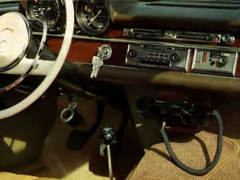
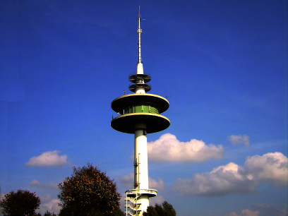
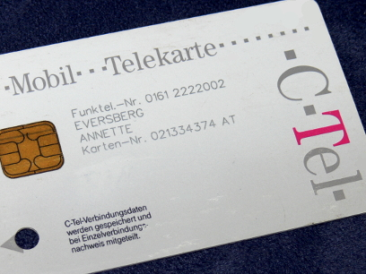
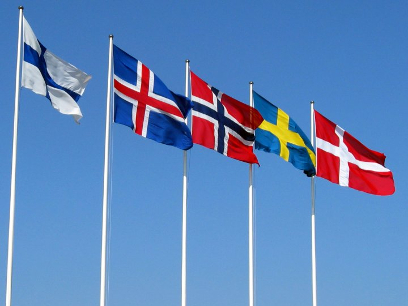
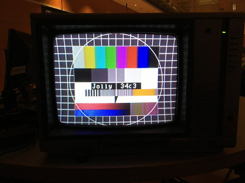
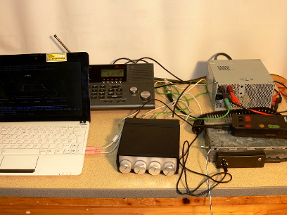

|
|  |  |
| A-Netz phone in a Merceds Benz | B-Netz radio tower in Bredstedt |
|---|---|
|  |  |
| my mother's C-Netz SIM card | NMT (Nordic Mobile Telephone) |
|  | |
| AMPS (USA) / TACS (UK / Ireland / Italy) | Transmit TV test image signals |
|  | |
| my early radio setup |
A base station implementation of classic mobile networks. All these networks use analog voice transmission. The signaling is done by tones and/or FSK modulated digital messages. It started with the idea to make a base station for the German B-Netz, but more networks followed.
This project is pure software that requires a transmitter and a receiver connected to the sound card of a Linux PC. A second sound card or ISDN card is used to route calls from and to the mobile phone.
Please go to project's hompage at http://osmocom-analog.eversberg.eu to download source code.
Implemented networks:
Additional features: